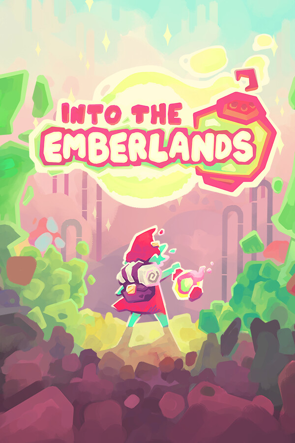

Into the Emberlands
Every archived year-end list appearance, including placement and points earned.
About the Game
Roadmap About the Game Step into the enchanting world of Into the Emberlands, a cozy exploration game with a rogue-lite twist that is all about rebuilding the home of the charming Knacks in a world threatened by a mysterious glooming Miasma. As the chosen Lightbearer, you are equipped with a lantern fueled by light-bringing ember, allowing you to venture out into the Miasma. Bring back the lost Knacks and collect resources to rebuild and expand your village! But be aware, if the ember lantern fades you’ll become lost in Miasma yourself until the next bearer of light finds you…Explore Embark on your journey that starts in the village of the charming KnacksExplore an ever-sprawling world full of small adventures and big surprisesTraverse various biomes in a procedurally generated world with endless replayabilityDiscover the scenery hidden by the glooming Miasma which is teeming with life and secrets Encounter Encounter quirky and mystical creaturesSupport the various inhabitants of the Emberlands and they’ll aid your journey with resources and valuable upgrades to your equipment!Keep an eye out for the Knacks that lost their way in the Miasma and guide them safely home to the light of your village Expand Rebuild and expand your village to a thriving safe haven for your people!Use the resources you gathered to upgrade your village by building new homes and amenitiesLay the foundation for future adventures, as each new building and vendor will give you a head-start on your next quest
| Released | 2024-06-18 |
|---|---|
| Developer | Tiny Roar |
| Publisher | Daedalic Entertainment |
| Genres | Adventure, Strategy, Casual, Indie |
| Platforms | PC |
SingleplayerSteam AchievementsSteam CloudPartial Controller SupportExplorationSurvivalControllerEarly AccessFamily FriendlyCuteColorfulRoguelike
Game information provided by RAWG.
Points by Year
List History
| Year | Source | List | Placement | Points |
|---|---|---|---|---|
| 2025 | SUPERJUMP | 50 Outstanding Games Released in 2025 | Unranked | 1 |